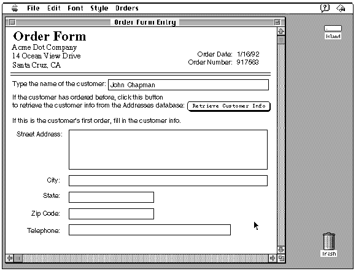
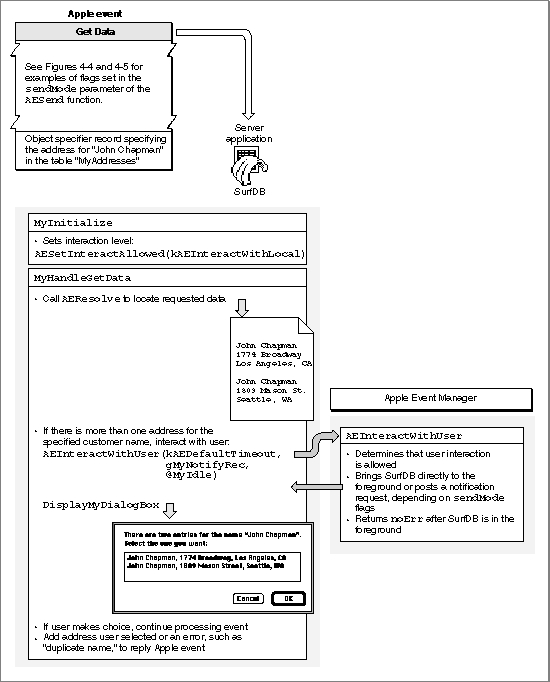

Requesting User Interaction
If your server application needs to interact with the user for any reason, it must call theAEInteractWithUserfunction to make sure it is in the foreground before it actually interacts with the user. WhenAEInteractWithUserallows user interaction (based on the client's and server's preferences),AEInteractWithUserbrings the server application to the foreground--either directly or after the user responds to a notification request--and then returns anoErrresult code. IfAEInteractWithUserbrings the server to the foreground directly, the client returns to the foreground immediately after the server has finished interacting with the user. IfAEInteractWithUserbrings the server to the foreground after the user responds to a notification request, the server remains in the foreground after completing the user interaction.The
AEInteractWithUserfunction specifies how long your handler is willing to wait for a response from the user. For example, if the timeout value is 900 ticks (15 seconds) and the Apple Event Manager posts a notification request, the Notification Manager begins to display a blinking icon in the upper-right corner of the screen, then removes the notification request (and the blinking icon) if the user does not respond within 15 seconds. (The discussion that follows describes some restrictions on the icons that can be displayed in this situation.)Note that the timeout value passed to the
AEInteractWithUserfunction is separate from the timeout value passed to theAESendfunction, which specifies how long the client application is willing to wait for the reply or return receipt from the server application. IfAEInteractWithUserdoes not receive a response from the user within the specified time,AEInteractWithUserreturnserrAETimeout.You may want to give the user a method of setting the interaction level. For example, some users may not want to be interrupted while background processing of an Apple event occurs, or they may not want to respond to dialog boxes when your application is handling Apple events sent from another computer.
Listing 4-14 illustrates the use of the
AEInteractWithUserfunction. You call this function before your application displays a dialog box or otherwise interacts with the user when processing an Apple event. You specify a timeout value, a pointer to a Notification Manager record, and the address of an idle function as parameters toAEInteractWithUser.Listing 4-14 Using the
AEInteractWithUserfunction
myErr := AEInteractWithUser(kAEDefaultTimeout, gMyNotifyRecPtr, @MyIdleFunction); IF myErr <> noErr THEN {the attempt to interact failed; do any error handling} DoError(myErr) ELSE {interact with the user by displaying a dialog box } { or by interacting in any other way that is necessary} DisplayMyDialogBox;You can set a timeout value, in ticks, in the first parameter toAEInteractWithUser. Use thekAEDefaultTimeoutconstant if you want the Apple Event Manager to use a default value for the timeout value. The Apple Event Manager uses a timeout value of about one minute if you specify this constant. You can also specify thekNoTimeOutconstant if your application is willing to wait an indefinite amount of time for a response from the user. Usually you should provide a timeout value, so that your application can complete processing of the Apple event in a reasonable amount of time.If you specify
NILinstead of a Notification Manager record in the second parameter ofAEInteractWithUser, the Apple Event Manager looks for an application icon with the ID specified by the application's bundle ('BNDL') resource and the application's file reference ('FREF') resource. The Apple Event Manager first looks for an'SICN'resource with the specified ID; if it can't find an'SICN'resource, it looks for the'ICN#'resource and compresses the icon to fit in the menu bar. The Apple Event Manager won't look for any members of an icon family other than the icon specified in the'ICN#'resource.If the application doesn't have
'SICN'or'ICN#'resources, or if it doesn't have a file reference resource, the Apple Event Manager passesNILto the Notification Manager, and no icon appears in the upper-right corner of the screen. Therefore, if you want to display any icon other than those of type'SICN'or'ICN#', you must specify a notification record as the second parameter to theAEInteractWithUserfunction.
The
- Note
- If you want the Notification Manager to use a color icon when it posts a notification request, you should provide a Notification Manager record that specifies a
'cicn'resource.
AEInteractWithUserfunction posts a notification request only when user interaction is allowed and thekAECanSwitchLayerflag in thekeyInteractLevelAttrattribute is not set.The last parameter to
AEInteractWithUserspecifies an idle function provided by your application. Your idle function should handle any update events, null events, operating-system events, or activate events while your application is waiting to be brought to the front. See "Writing an Idle Function" on page 5-22 for more information.Figure 4-1 illustrates a situation in which a client application (a forms application) might request a service from a server application (a database application). To perform this service, the server application must interact with the user.
Figure 4-1 A document with a button that triggers a Get Data event

Figure 4-1 shows part of an electronic form used to enter information about an order received by telephone. If the customer has ordered from the company before, the user can quickly retrieve the customer's address and telephone number by clicking the Retrieve Customer Info button. In response, the forms application sends a Get Data event to a database application (SurfDB) currently open on the same computer. The Get Data event sent by the forms application (the client application for the ensuing transaction) asks SurfDB (the server) to locate the customer's name in a table of addresses and return the customer's address. When the forms application receives the reply Apple event, it can add the address data to the appropriate fields in the order form.
If SurfDB, as the server application, locates more than one entry for the specified customer name, it needs to interact with the user to determine which data to return in the reply Apple event. To interact with the user, the server application must be in the foreground, so that it can display a dialog box like the one shown in Figure 4-2.
Figure 4-2 A server application displaying a dialog box that requests information from the user
Figure 4-3, Figure 4-4, and Figure 4-5 illustrate two methods of dealing with this situation. Figure 4-3 shows the behavior of the server application that is common to both methods. In both cases, the server uses
AESetInteractionAllowedto set its own interaction level tokAEInteractWithLocal. After callingAEResolveto locate the requested data, the server application discovers that two addresses match the name the user typed into the electronic form. The server then callsAEInteractWithUserwith a timeout value ofkAEDefaultTimeoutso it can find out which address the user wants.Figure 4-3 Handling user interaction

Figure 4-4 shows the circumstances in which the server application's call to
AEInteractWithUsershown in Figure 4-3 will cause the Apple Event Manager to bring the server application directly to the foreground. The client application sets thekAECanInteract,kAECanSwitchLayer, andkAEWaitReplyflags in thesendModeparameter of theAESendfunction when it sends the Get Data event shown in the figure. These flags indicate that the client application expects the user to wait until the address appears in the appropriate fields of the electronic form before continuing with any other work. In this case, an automatic layer switch will not surprise the user and will avoid the additional user action required to respond to a notification request, soAEInteractWithUserbrings the server application directly to the foreground and returns anoErrresult code. The server application then displays the dialog box requesting that the user select the desired customer.After the user selects the desired customer and clicks OK, the server application's Get Data event handler returns. The Apple Event Manager immediately brings the client application to the foreground, and the client application displays the requested customer information in the appropriate fields.
Figure 4-4 Handling user interaction with the
kAEWaitReplyflag set
Figure 4-5 shows the circumstances in which the server application's call to
AEInteractWithUserin Figure 4-3 will cause the Apple Event Manager to post a notification request rather than bringing the server application directly to the foreground.Figure 4-5 Handling user interaction with the
kAEQueueReplyflag set
The only difference between the Get Data event shown in Figure 4-4 and the Get Data event shown in Figure 4-5 is that the client application has set the
kAEQueueReplyflag instead of thekAEWaitReplyflag in thesendModeparameter ofAESendand has not set thekAECanSwitchLayerflag. This combination of flags indicates that the client application expects the user to continue filling in other parts of the form, such as the items being ordered; the address will just appear after a while, provided there is no duplicate name. In this case, an automatic layer switch would disrupt the user's work. Instead of bringing the server application directly to the foreground,AEInteractWithUseruses the Notification Manager to post a notification request.After the user has responded to the request and has brought the server application to the foreground,
AEInteractWithUserreturns anoErrresult code, and the server application displays the dialog box requesting that the user select the desired customer. When the user selects a customer and clicks OK, the server application's Get Data event handler returns. Because the user brought the server to the foreground manually, the server remains in the foreground after the handler returns.